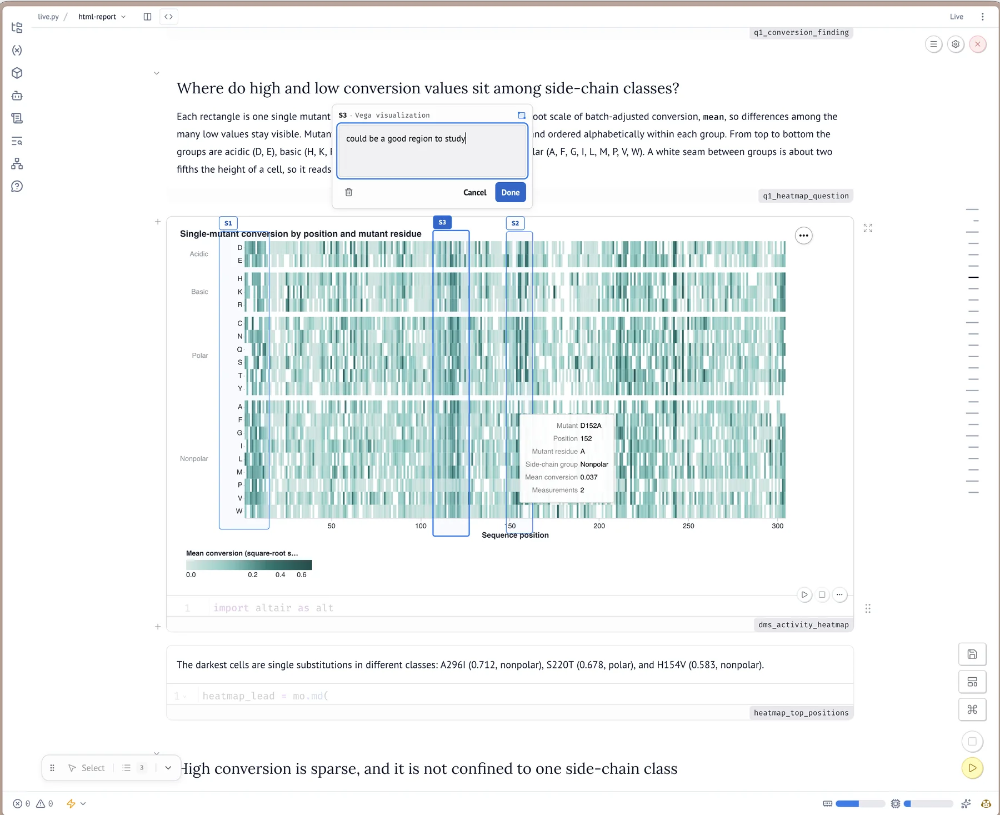

written by Eric J. Ma on 2026-10-14 | tags: marimo python agents notebooks llms workflows sandboxing reproducibility data science pair programming
In this post, I walk through my setup for agentic data science with marimo notebooks: picking a harness and model, writing instruction files that hold the agent to my standards, sandboxing environments with uv or pixi, and pairing the agent with a live notebook in an iterative loop. I also cover custom anywidget viewers, feedback with marimo-lens, and turning the finished notebook into a presentation. It all started as a whiteboard sketch headed for a video and course. What could you discover if an agent typed while you thought out loud?
People keep asking me how I do agentic data science with marimo notebooks. Recently I stood at a whiteboard and drew the whole system out: the setup, the tools, the loop you work in with the agent. The drawing came out clean, so I took a photo of it.
The whole system comes down to one idea: agents do their best data science work when you structure the environment around them. You pick a harness and a model, write instruction files that hold the agent to your standards, load a skill that teaches it the marimo specifics, and give the whole thing a sandboxed environment. Then you pair the agent with a live notebook and spend the session in a loop where you think out loud and the agent types. I've written about how to do agentic data science before, and about why marimo won me over. This one is the concrete, marimo-specific walkthrough.
Four things need to exist before the analysis starts.
The harness is whichever coding agent you like. Codex, Claude Code, Copilot, pi, they all work. The more interesting choice is the model behind it. You want speed, so the session stays conversational, and you want intelligence, so you're not dealing with dumb mistakes the agent makes along the way. It's a very tough balance to strike.
My current ranking, fastest to slowest, is Composer 2.5, Grok 4.6 fast, GLM 5.3 Flash, and GPT 5.6 on medium effort. The further down the list you go, the more work the model can handle in one shot, the more prompting it needs to keep moving, and the longer you wait for feedback from the agent. For interactive notebook sessions, I lean toward the fast end of that list.
Instruction files do the most work in this setup. Your AGENTS.md file tells the agent what a good notebook looks like, and mine holds the agent to three standards.
First among them is the sandwich: markdown, then code, then output, then more markdown. Every piece of code the agent writes arrives wrapped in narration, before and after, so the notebook reads like a document even while it's under construction. In the AGENTS.md, the rule reads:
- Every code cell must be sandwiched between markdown cells that explain what the code does and why. A markdown cell precedes the code cell to describe intent, and a markdown cell follows to provide context for the results or transitions to the next step.
Upon prompting, the agent comes back with a sentence of setup, the code cell, the chart, and a one-line read of what the chart shows.
Named cells are the second. When you drive a session by talking, "clean up the plotting cell" only works if the agent can find the plotting cell. So the AGENTS.md says:
- Every cell must have a descriptive name. Use `@app.cell(name="descriptive_name")` instead of bare `@app.cell` or unnamed `def _()`.
Names give both of you the vocabulary to point at things.
Third, code stays hidden by default. I've tried keeping all the code visible, and man, the notebook gets hard to read fast. The AGENTS.md rule is to hide all code cells unless I ask otherwise, and marimo makes that enforceable with a flag right on the cell decorator:
@app.cell(hide_code=True) def _(): mo.md("This cell's narration shows; its code stays folded away.") return
The narration and outputs stay in view, and you can always inspect any cell when you want to see the machinery.
For marimo knowledge specifically, I use the official marimo-pair skill rather than writing my own instructions from scratch. The marimo team maintains it, their docs call it the recommended way to collaborate with agents on notebooks, and it stays current as marimo evolves. The reason it's so useful is that pairing is a skill on the agent's side too: marimo-pair teaches the agent how to drive a live notebook according to marimo's own best practices. I was curious how well the skill held up across models, so I benchmarked it across a stack of LLMs, measuring cost, task progress, and instruction adherence for each one.
Install it with:
npx skills add marimo-team/marimo-pair
My recommendation: install it into each repository where you do data science, rather than globally. The skills CLI asks you to choose a scope when you add a skill, so pick the project there. Every installed skill carries a description that gets surfaced to the agent at the start of a session, so a growing pile of global skills bloats every session, including the ones where you're using the agent for non-data-science work. Keeping marimo-pair scoped to the repos where the notebooks live keeps everything else lean.
Run marimo through a fast environment tool like uv or pixi, in sandbox mode. Sandbox mode is the piece that makes environments a non-issue: marimo records the notebook's dependencies into the notebook file itself, as PEP 723 inline script metadata, and prepares an isolated environment from those requirements. Every .py notebook then carries its own environment with it, so when the agent installs what an analysis needs, the notebook file records it, and anyone opening that notebook later gets the same setup.
Once the setup exists, every session has the same shape.
uvx marimo edit --sandbox notebook.py, or pixi exec marimo edit --sandbox notebook.py for the pixi equivalent.This is a true anywidget running in a marimo notebook compiled to WebAssembly: a Python class whose JavaScript side loads 3Dmol and renders the structure, the kind of viewer an agent can build for your data. It's ubiquitin (PDB 1UBQ); drag to rotate, scroll to zoom. The notebook source is protein-anywidget.py.
Sometimes the right move is to step out of the loop for a moment and set up a separate notebook that trains in the background while you keep iterating in the foreground.
Domain skills plug in here too. When an analysis needs R2D2, which puts the prior on model fit itself, I have a skill with the R2D2 papers baked in, alongside PyMC implementation examples, so the agent works from the primary sources instead of its memory of them. (I've written about why R2D2 is worth your attention before.)
This loop is interactive by design. You iterate with the agent, in plain language, and marimo's reactivity re-runs whatever depends on the cell you just changed. The creative work happens inside that loop. The mechanics are easy to demonstrate: a table, a plot, a custom viewer. Where the analysis goes from there comes out of your problem.
Notebooks need editing like any draft. When mine needs sprucing up, I use marimo-lens: point at a cell's output, say a bar in a chart or a row in a table, drop a note right there, and keep reading. Lens hands the agent your selection together with the code and data behind it, so the agent sees what you see, revises, and brings the result back into view for you to judge. It keeps feedback attached to the output you're looking at, which is what goes missing when you say "that spike in the chart, fix it" in a chat box.
It works in both directions, too. After the agent fixes things, it posts a message back onto the notebook right where you pointed, a small note you can review, so its answer lands next to the output it changed.

You point at part of a rendered result in marimo-lens, and the selection, your note, and the code behind the output go to the agent together. Here the selections are boxes drawn over a heat map during my live demo, as written up in the live-demoing post.
A finished analysis needs a presentation layer, and the notebook you built is already most of the way there. CellTour, a code tour widget from WigglyStuff, walks you through the notebook one popover at a time, pointing at each cell by name. marimo also exports a notebook configured with its slides layout as a reveal.js deck, and Marimo Studio builds custom apps, reports, and presentations on top of the notebook's data and outputs. The same artifact you analyzed with becomes the artifact you present, which is one of my favorite parts of this workflow.
Zooming out, the three marimo tools are part of a loop between you and the agent. marimo-pair is how you get the agent to work within the notebook. marimo-lens is how you give feedback to the agent. And marimo-studio is how you take what you need from the notebook and deliver it to your audience. All three of them interact with that one artifact, the .py file, and you only have to interact with an intelligent and fast agent, from first cell to final slide.
Best of all, everything in that loop is a plain-text artifact too! The notebook is a .py file, the slides are an HTML export, the app is the same notebook served somewhere, and all of it goes into git and deploys from there. How to deploy marimo notebooks deserves a post of its own; stay tuned!
@article{
ericmjl-2026-agent-assisted-data-science-with-marimo,
author = {Eric J. Ma},
title = {Agent-assisted data science with marimo notebooks},
year = {2026},
month = {10},
day = {14},
howpublished = {\url{https://ericmjl.github.io}},
journal = {Eric J. Ma's Blog},
url = {https://ericmjl.github.io/blog/2026/10/14/agent-assisted-data-science-with-marimo},
}
I send out a newsletter with tips and tools for data scientists. Come check it out at Substack.
# TODO(eric): learn how to learn anything. feb 2027.
If you would like to sponsor the coffee that goes into making my posts, please consider GitHub Sponsors!